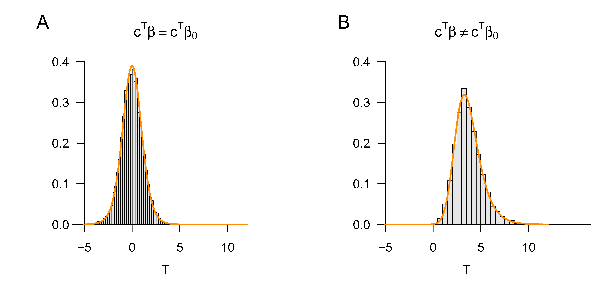
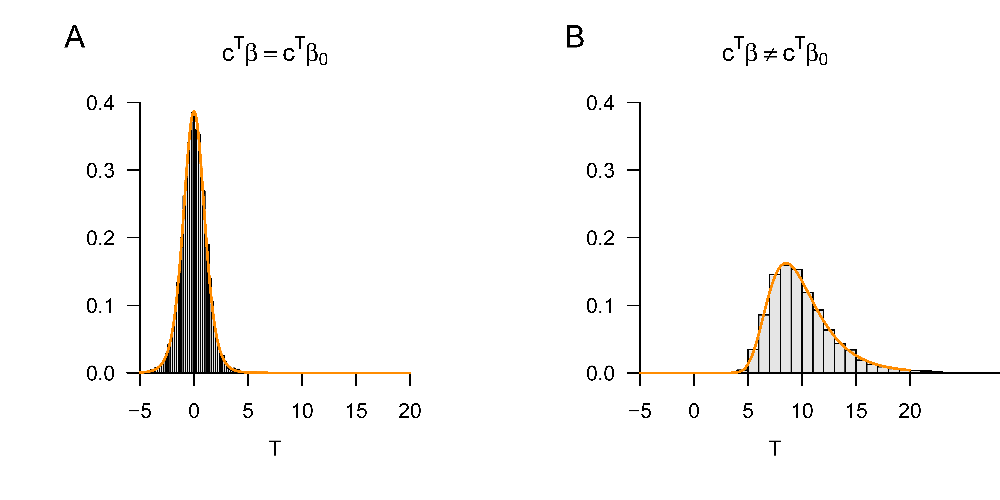

# Libraries
library(MASS) # multivariate Normalverteilung
# Modellformulierung
n = 12 # Anzahl von Datenpunkten
p = 1 # Anzahl von Betaparametern
X = matrix(c(rep(1,n)), nrow = n) # Designmatrix
I_n = diag(n) # Einheitsmatrix
beta = c(0,1) # wahre , aber unbekannte , Betaparameter
nscn = length(beta) # Anzahl wahrer, aber unbekannter, Hypothesenszenarien
sigsqr = 1 # wahrer, aber unbekannter, Varianzparameter
c = 1 # Kontrastvektor von Interessse
beta_0 = 0 # Nullhypothesenbetaparameter
# Frequentistische Simulation
nsim = 1e4 # Anzahl Simulationen
delta = rep(NaN, nscn) # Anzahl Nichtzentralitätsparameter
Tee = matrix(rep(NaN, nscn*nsim), ncol = nscn) # T-Teststatistik Realisierungsarray
for(s in 1:nscn){ # Hypothesenszenarien
delta[s] = ((t(c) %*% beta[s] - t(c) %*% beta_0)/ # Nichtzentralitätsparameter
sqrt(sigsqr*t(c)%*%solve(t(X)%*%X)%*%c))
for(i in 1:nsim){ # Simulationsiterationen
y = mvrnorm(1, X %*% beta[s], sigsqr*I_n) # y
beta_hat = solve(t(X) %*% X) %*% t(X) %*% y # \hat{\beta}
eps_hat = y - X %*% beta_hat # \hat{\eps}
sigsqr_hat = (t(eps_hat) %*% eps_hat)/(n-p) # \hat{\sigma}^2
Tee[i,s] = ((t(c) %*% beta_hat - t(c) %*% beta_0)/ # T
sqrt(sigsqr_hat*t(c)%*%solve(t(X)%*%X)%*%c))
}
}29 T-Statistiken
In diesem Abschnitt führen wir T-Statistiken als Maße zur Evaluation von Betaparameterschätzern im ALM ein. T-Statistiken quantifizieren dabei die geschätzten Effekte des Betaparameterschätzers in Bezug zur durch den Varianzparameterschätzer geschätzten Residualvariabilität. Der Wert einer T-Statistik ist also zunächst einmal einfach als Signalzu-Rauschen Verhältnis (Signal-to-Noise Ratio) zu verstehen.
T-Statistiken erlauben weiterhin die Evaluation von Linearkombinationen der Komponenten des Betaparameterschätzers im Sinne Frequentistischer Konfidenzinteralle und Hypothesentests. Wir betrachten hier zunächst nur die funktionale Form von T-Statistiken und ihre Frequentistische Verteilung zum Zwecke der Konfidenzintervallbestimmung. Der Einsatz von T-Teststatistiken im Rahmen von Einstich- und Zweistichproben T-Tests ist das Thema von Kapitel 31.
29.1 Definition und Beispiele
Vor dem Hintergrund des ALMs und seiner Parameterpunktschätzer definieren wir die T-Statistik wie folgt.
Definition 29.1 (T-Statistik) Es sei \[\begin{equation} \upsilon = X \beta+\varepsilon \mbox{ mit } \varepsilon \sim N\left(0_{n}, \sigma^{2} I_{n}\right) \end{equation}\] das ALM. Weiterhin seien \[\begin{equation} \hat{\beta}:=\left(X^{T} X\right)^{-1}X^{T}\upsilon \mbox{ und } \hat{\sigma}^{2}:=\frac{(\upsilon-X\hat{\beta})^{T}(\upsilon-X\hat{\beta})}{n-p} \end{equation}\] die Betaparameter- und Varianzparameterschätzer, respektive. Dann ist für einen Kontrastgewichtsvektor \(c \in \mathbb{R}^{p}\) und einen Parameter \(\beta_{0} \in \mathbb{R}^{p}\) die T-Statistik definiert als \[\begin{equation} T:=\frac{c^{T} \hat{\beta}-c^{T} \beta_{0}}{\sqrt{\hat{\sigma}^{2} c^{T}\left(X^{T} X\right)^{-1} c}} . \end{equation}\]
Geeignete Wahlen des Kontrastgewichtvektors \(c \in \mathbb{R}^{p}\) und des Parameters \(\beta_{0} \in \mathbb{R}^{p}\) erlauben eine Vielzahl von Einsatzmöglichkeiten der T-Statistik. Betrachten wir zunächst den Kontrastgewichtsvektor. Offenbar dient der Konstrastgewichtsvektor dazu, den Zufallsvektor \(\hat{\beta} \in \mathbb{R}^{p}\) in die Zufallsvariable \(c^{T} \hat{\beta}\) zu transfomieren und sichert damit die Skalarität der T-Statistik. Weiterhin erlaubt die Wahl von \(p\)-dimensionalen Einheitsvektoren für den Kontrastgewichtsvektor die Auswahl einzelner Komponenten des Betaparameters zur Evaluation mithilfe der T-Statistik. Schließlich erlaubt eine generelle Wahl des Kontrastgewichtsvektors die Evaluation beliebiger Linearkombination der Betaparameterkomponenten, wie zum Beispiel Differenzen einzelner Komponenten. Beispielhaft seien für \(\hat{\beta} \in \mathbb{R}^{2}\) hier folgende Möglichkeiten für die Wahl von \(c \in \mathbb{R}^{2}\) hinsichtlich des Skalarproduktes \(c^{T} \hat{\beta}\) aufgeführt: \[\begin{equation} c:= \begin{pmatrix} 1 \\ 0 \end{pmatrix} \Rightarrow c^{T}\hat{\beta} = \hat{\beta}_{1}, \quad c := \begin{pmatrix} 0 \\ 1 \end{pmatrix} \Rightarrow c^{T}\hat{\beta} = \hat{\beta}_{2}, \quad c :=\begin{pmatrix} 1 \\ -1 \end{pmatrix} \Rightarrow c^{T}\hat{\beta} = \hat{\beta}_{1} - \hat{\beta}_{2}. \end{equation}\] Die Wahl des Parameters \(\beta_{0} \in \mathbb{R}^{p}\) eröffnet die Möglichkeit, die T-Statistik unterschiedlich einzusetzen. Wählt man zum Beispiel \(\beta_{0}:=0_{p}\), so erhält man mit der T-Statistik eine Deskriptivstatistik, die es erlaubt, geschätzte Regressoreffekte, also Komponenten oder Linearkombinationen von \(\hat{\beta}\), im Sinne eines Signal-zu-Rauschen Verhältnisses in Bezug zu der durch \(\hat{\sigma}^{2}\) quantifizierten Residualdatenvariabilität zu setzen. Der Nenner der TStatistik stellt dabei sicher, dass insbesondere die adäquate (Ko)Standardabweichung der entsprechenden Betaparameterkomponentenkombination als Bezugsgröße dient, da es sich bei \(\hat{\sigma}^{2}\left(X^{T} X\right)^{-1}\) bekanntlich um die Kovarianz des Betaparameterschätzers handelt (vgl. Theorem 28.3).
Wählt man für \(\beta_{0}\) dagegen \(\beta\), also den wahren, aber unbekannten, Betaparameterwert, so eröffnet die T-Statistik die Möglichkeit, für einzelne Komponenten des Betaparametervektors Konfidenzintervalle zu bestimmen. Wir vertiefen diesen Aspekt der T-Statistik in Kapitel 29.2. Deklariert man schließlich \(\beta_{0}\) im Kontext eines Testszenarios als das Element einer Nullhypothese, so eröffnet die T-Statistik die hypothesentestbasierte Inferenz über Betaparameterkomponenten und ihrer Linearkombinationen. Anwendungsfälle dieser Art diskutieren wir ausführlich in Kapitel 31.
Die Anwendung der T-Statistik zum Zwecke der Frequentistischen Inferenz im Sinne von Konfidenzintervallen und Hypothesentests basiert dabei natürlich auf der Frequentistischen Verteilung der T-Statistik vor dem Hintergrund des ALMs. Diese ist der zentrale Inhalt folgenden Theorems, auf dessen Beweis wir verzichten.
Theorem 29.1 (Frequentistische Verteilung der T-Statistik) Es sei \[\begin{equation} \upsilon = X \beta+\varepsilon \mbox{ mit } \varepsilon \sim N\left(0_{n}, \sigma^{2} I_{n}\right) \end{equation}\] das ALM. Weiterhin seien \[\begin{equation} \hat{\beta} := \left(X^{T} X\right)^{-1}X^{T}\upsilon \mbox{ und } \hat{\sigma}^{2}:=\frac{(\upsilon-X\hat{\beta})^{T}(\upsilon-X\hat{\beta})}{n-p} \end{equation}\] die Betaparameter- und Varianzparameterschätzer, respektive. Schließlich sei für einen Kontrastgewichtsvektor \(c \in \mathbb{R}^{p}\) und einen Parameter \(\beta_{0} \in \mathbb{R}^{p}\) \[\begin{equation} T := \frac{c^{T}\hat{\beta} - c^{T}\beta_{0}}{\sqrt{\hat{\sigma}^{2} c^{T}\left(X^{T} X\right)^{-1} c}} \end{equation}\] die T-Statistik. Dann gilt \[\begin{equation} T \sim t(\delta, n-p) \mbox{ mit } \delta:=\frac{c^{T} \beta-c^{T} \beta_{0}}{\sqrt{\sigma^{2} c^{T}\left(X^{T} X\right)^{-1} c}} . \end{equation}\]
Im Allgemeinen ist die T-Statistik also nichtzentral t-verteilt. Gilt dabei, wie bei der Bestimmung von Konfidenzintervallen (vgl. Kapitel 29.2) \(\beta_{0}:=\beta\) oder gilt in einem Testszenario bei Zutreffen der Nullhypothese \(\beta := \beta_{0}\) (vgl. Kapitel 31), so ist die T-Statistik sogar \(t\)-verteilt, jeweils mit Freiheitsgradparameter \(n-p\). Gilt in einem Testszenario dagegen, dass die Nullhypothese nicht zutrifft, so kann die Verteilung der T-Statistik aus Theorem 29.1 zur Herleitung der Testgütefunktion und damit zur Bestimmung der Power des Tests genutzt werden (vgl. Kapitel Kapitel 31). Wir werden diese Aspekte an gegebener Stelle vertiefen. An dieser Stelle wollen wir die T-Statistik und ihre Verteilung zunächst nur an den Beispielen der unabhängigen identisch normalverteilten Zufallsvariablen und der einfachen linearen Regression illustrieren.
Beispiel (1) Unabhängige und identisch normalverteilte Zufallsvariablen
Es sei \[\begin{equation} \upsilon \sim N\left(X \beta, \sigma^{2} I_{n}\right) \mbox{ mit } X := 1_{n} \in \mathbb{R}^{n \times 1}, \beta:=\mu \in \mathbb{R} \mbox{ und } \sigma^{2}>0 \end{equation}\] das ALM Szenario unabhängiger und identisch normalverteilter Zufallsvariablen und es seien \(c:=1\) und \(\beta_{0}:=\mu_{0} \in \mathbb{R}\). Dann gilt für die T-Statistik \[\begin{equation} T = \frac{c^{T} \hat{\beta}-c^{T} \mu_{0}}{\sqrt{\hat{\sigma}^{2} c^{T}\left(X^{T} X\right)^{-1} c}} = \frac{1^{T} \bar{v}-1^{T} \mu_{0}}{\sqrt{s_{v}^{2} 1^{T}\left(1_{n}^{T} 1_{n}\right)^{-1} 1}} = \sqrt{n}\left(\frac{\bar{v}-\mu_{0}}{s_{v}}\right) \end{equation}\] Dies entspricht offenbar der bekannten Einstichproben-T-Teststatistik (vgl. Kapitel 24). Wie diese nimmt die hier betrachtete T-Statistik, bei Konstanz der jeweils komplementären Terme, große absolute Werte für eine große absolute Differenz von \(\bar{v}-\mu_{0}\) (oft als Effekt bezeichnet), sowie für kleine Werte von \(s_{v}^{2}\) (also eine geringe Datenvariabilität) und einen großen Wert von \(n\) (also einen großen Stichprobenumfang) an. Folgender R Code simuliert die Frequentistische Verteilung dieser T-Statistik für die Fälle \(\beta=\beta_{0}\) und \(\beta \neq \beta_{0}\).
Abbildung 29.1 A und B zeigen die resultierenden simulierten und analytischen Verteilungen der T-Statistik.

Beispiel (2) Einfache lineare Regression
In diesem Beispiel wollen wir nicht auf die spezifische Form der T-Statistik eingehen, aber anhand einer Simulation demonstrieren, wie sich das Prinzip der T-Statistik im Kontext der einfachen linearen Regression darstellt. Dazu betrachten wir das bekannte Beispielmodell der einfachen linearen Regression (vgl. Kapitel 27), in diesem Fall mit den wahren, aber unbekannten, Parameterwerten \(\beta_{A}:=(1,0)\) und \(\beta_{B}:=(1,1)\). Weiterhin betrachten wir den Kontrastgewichtsvektor \(c:=(0,1)\), so dass die T-Statistik zu Evaluation des Steigungsparameters der einfachen linearen Regression genutzt werden kann. Schließlich betrachten wir in beiden Fällen den Parameter \(\beta_{0}:=(0,0)^{T}\), so dass im Fall von \(\beta_{A}\) gilt, dass \(c^{T} \beta=c^{T} \beta_{0}\) und im Fall von \(\beta_{B}\) gilt, dass \(c^{T} \beta \neq c^{T} \beta_{0}\). Folgender R Code implementiert die skizzierten Szenarien, Abbildung 29.2 A und B zeigen die resultierenden simulierten und analytischen Verteilungen der T-Statistik.
# Modellformulierung
library(MASS) # multivariate Normalverteilung
n = 10 # Anzahl von Datenpunkten
p = 2 # Anzahl von Betaparametern
x = 1:n # Prädiktorwerte
X = matrix(c(rep(1,n),x), ncol = p) # Designmatrix
I_n = diag(n) # Einheitsmatrix
beta = matrix(c(1,0,1,1), nrow = 2) # wahre, aber unbekannte, Betaparameter
nscn = ncol(beta) # Anzahl wahrer, aber unbekannter, Hypothesenszenarien
sigsqr = 1 # wahrer, aber unbekannter, Varianzparameter
c = matrix(c(0,1), nrow = 2) # Kontrastvektor von Interessse
beta_0 = matrix(c(0,0), nrow = 2) # Nullhypothesenbetaparameter
# Frequentistische Simulation
nsim = 1e4 # Anzahl Simulationen
delta = rep(NaN, nscn) # Anzahl Nichtzentralitätsparameter
Tee = matrix(rep(NaN, nscn*nsim), ncol = nscn) # T-Teststatistik Realisierungsarray
for(s in 1:nscn){ # Hypothesenszenarien
delta[s] = ((t(c) %*% beta[,s] - t(c) %*% beta_0)/ # Nichtzentralitätsparameter
sqrt(sigsqr*t(c)%*%solve(t(X)%*%X)%*%c))
for(i in 1:nsim){ # Simulationsiterationen
y = mvrnorm(1, X %*% beta[,s], sigsqr*I_n) # y
beta_hat = solve(t(X) %*% X) %*% t(X) %*% y # \hat{\beta}
eps_hat = y - X %*% beta_hat # \hat{\eps}
sigsqr_hat = (t(eps_hat) %*% eps_hat)/(n-p) # \hat{\sigma}^2
Tee[i,s] = ((t(c) %*% beta_hat - t(c) %*% beta_0)/ # T
sqrt(sigsqr_hat*t(c)%*%solve(t(X)%*%X)%*%c))
}
}

29.2 Konfidenzintervalle für Betaparameterkomponenten
Mithilfe der T-Statistik können Konfidenzintervalle für die Komponenten des Betaparametervektors bestimmt werden. Das folgende Theorem ist die zentrale Aussage dieses Abschnitts.
Theorem 29.2 (Konfidenzintervalle für Betaparameterkomponenten) Es sei \[\begin{equation} \upsilon = X \beta+\varepsilon \mbox{ mit } \varepsilon \sim N\left(0_{n}, \sigma^{2} I_{n}\right) \end{equation}\] das ALM, \[\begin{equation} \hat{\beta}:=\left(X^{T} X\right)^{-1}X^{T}\upsilon \mbox{ und } \hat{\sigma}^{2}:=\frac{(\upsilon-X\hat{\beta})^{T}(\upsilon-X\hat{\beta})}{n-p} \end{equation}\] seien die Betaparameter- und Varianzparameterschätzer, respektive und für ein \(\delta \in] 0,1[\) sei \[\begin{equation} t_{\delta}:=\Psi^{-1}\left(\frac{1+\delta}{2}; n-p\right). \end{equation}\] Schließlich sei für \(j=1, \ldots, p\) \[\begin{equation} \lambda_{j}:=\left(\left(X^{T} X\right)^{-1}\right)_{j j} \mbox{ das $j$te Diagonalelement von } \left(X^{T} X\right)^{-1} \end{equation}\] Dann ist für \(j=1, \ldots, p\) \[\begin{equation} \kappa_{j} := \left[ \hat{\beta}_{j}-\hat{\sigma} \sqrt{\lambda_{j}} t_{\delta}, \hat{\beta}_{j}+\hat{\sigma} \sqrt{\lambda_{j}} t_{\delta} \right] \end{equation}\] ein \(\delta\)-Konfidenzintervall für die \(j\)te Komponente \(\beta_{j}\) des Betaparameters \(\beta=\left(\beta_{1}, \ldots, \beta_{p}\right)^{T}\).
Beweis. Wir müssen zeigen, dass \[\begin{equation} \mathbb{P}\left(\kappa_{j} \ni \beta_{j}\right) = \delta. \end{equation}\] Dazu halten wir zunächst fest, dass für alle \(j=1, \ldots, p\) bei Wahl von \(\beta_{0}=\beta\) und \(c:=e_{j}\) nach Theorem 29.1 für \(T \sim t(\delta, n-p)\) gilt, dass \[\begin{equation} T = \frac{e_{j}^{T} \hat{\beta}-e_{j}^{T} \beta}{\sqrt{\hat{\sigma}^{2} e_{j}^{T}\left(X^{T} X\right)^{-1} e_{j}}} = \frac{\hat{\beta}_{j}-\beta_{j}}{\sqrt{\hat{\sigma}^{2}\left(\left(X^{T} X\right)^{-1}\right)_{j j}}} = \frac{\hat{\beta}_{j}-\beta_{j}}{\hat{\sigma}\sqrt{\lambda_{j}}} =: T_{j} \end{equation}\] und \[\begin{equation} \delta = \frac{e_{j}^{T} \beta-e_{j}^{T} \beta}{\sqrt{\hat{\sigma}^{2} e_{j}^{T}\left(X^{T} X\right)^{-1} e_{j}}} = 0 \end{equation}\] Damit gilt dann auch sofort, dass \(T_{j} \sim t(n-p)\). Weiterhin erinnern erinnern wir daran (vgl. Kapitel 23), dass per Definition von \(t_{\delta}\) gilt, dass \[\begin{equation} \mathbb{P}\left(-t_{\delta} \leq T_{j} \leq t_{\delta}\right). \end{equation}\] Aus der Definition eines \(\delta\)-Konfidenzintervalls folgt dann \[\begin{equation} \begin{aligned} \delta & = \mathbb{P}\left(-t_{\delta} \leq T_{j} \leq t_{\delta}\right) \\ & = \mathbb{P}\left(-t_{\delta} \leq \frac{\hat{\beta}_{j}-\beta_{j}}{\hat{\sigma} \sqrt{\lambda_{j}}} \leq t_{\delta}\right) \\ & = \mathbb{P}\left(-t_{\delta} \hat{\sigma} \sqrt{\lambda_{j}} \leq \hat{\beta}_{j}-\beta_{j} \leq t_{\delta} \hat{\sigma} \sqrt{\lambda_{j}}\right) \\ & = \mathbb{P}\left(-\hat{\beta}_{j}-t_{\delta} \hat{\sigma} \sqrt{\lambda_{j}} \leq-\beta_{j} \leq-\hat{\beta}_{j}+t_{\delta} \hat{\sigma} \sqrt{\lambda_{j}}\right) \\ & =\mathbb{P}\left(\hat{\beta}_{j}+t_{\delta} \hat{\sigma} \sqrt{\lambda_{j}} \geq \beta_{j} \geq \hat{\beta}_{j}-t_{\delta} \hat{\sigma} \sqrt{\lambda_{j}}\right) \\ & =\mathbb{P}\left(\hat{\beta}_{j}-t_{\delta} \hat{\sigma} \sqrt{\lambda_{j}} \leq \beta_{j} \leq \hat{\beta}_{j}+t_{\delta} \hat{\sigma} \sqrt{\lambda_{j}}\right) \\ & =\mathbb{P}\left(\left[\hat{\beta}_{j}-\hat{\sigma} \sqrt{\lambda_{j}} t_{\delta}, \hat{\beta}_{j}+\hat{\sigma} \sqrt{\lambda_{j}} t_{\delta}\right]\right) \\ & =\mathbb{P}\left(\kappa_{j} \ni \beta_{j}\right) \end{aligned} \end{equation}\] und damit ist alles gezeigt.
Beispiel (1) Unabhängige und identisch normalverteilte Zufallsvariablen
Wie gewohnt betrachten wir als erstes Beispiel die ALM Form des Szenarios unabhängig und identisch normalverteilter Zufallsvariablen \[\begin{equation} \upsilon \sim N\left(X \beta, \sigma^{2} I_{n}\right) \mbox{ mit } X := 1_{n} \in \mathbb{R}^{n}, \beta:=\mu \in \mathbb{R}, \sigma^{2}>0 \end{equation}\] Dann gelten, wie bereits gesehen \[\begin{equation} \hat{\beta} = \frac{1}{n} \sum_{i=1}^{n} v_{i} =: \bar{v}, \hat{\sigma}^{2}=\frac{1}{n-1} \sum_{i=1}^{n}\left(v_{i}-\bar{v}\right)^{2}=: s_{v}^{2} \mbox{ und } \lambda_{1}=\left(1_{n}^{T} 1_{n}\right)^{-1}=\frac{1}{n}. \end{equation}\] Nach Theorem 29.2 gilt dann, dass \[\begin{equation} \kappa:=\left[\bar{v}-\frac{s}{\sqrt{n}} t_{\delta}, \bar{v}+\frac{s}{\sqrt{n}} t_{\delta}\right] \end{equation}\] ein \(\delta\)-Konfidenzintervall für \(\beta\) ist und dieses ist offenbar identisch mit dem bekannten \(\delta\)-Konfidenzintervall für den Erwartungsparameter der Normalverteilung.
Beispiel (2) Einfache lineare Regression
In diesem Beispiel wollen wir nicht auf die spezifische Form der Konfidenzintervalle für den Offset- und Steigungsparameter eingehen, sondern lediglich anhand folgender Simulation an die Frequentistische Bedeutung eines \(\delta\)-Konfidenzintervalls erinnern: Realisierungen von \(\delta\)-Konfidenzintervallen überdecken den wahren, aber unbekannten, Parameterwert mit einer frequentistischen Wahrscheinlichkeit von \(\delta\). Abbildung 29.3 zeigt, basierend auf folgendem R Code, dass dies in der konkreten Simulation mit \(\delta=0.95\) für den Offsetparameter in 94 von 100 und für den Steigungsparameter in 93 von 100 Fällen der Fall ist.
# Modellformulierung
library(MASS) # multivariate Normalverteilung
set.seed(0) # Random number generator seed
ns = 1e2 # Anzahl Simulationen
n = 10 # Anzahl von Datenpunkten
p = 2 # Anzahl von Betaparametern
x = 1:n # Prädiktorwerte
X = matrix(c(rep(1,n),x), ncol = p) # Designmatrix
I_n = diag(n) # Einheitsmatrix
beta = matrix(c(1,2), nrow = 2) # wahre, aber unbekannte, Betaparameter
sigsqr = 1 # wahrer, aber unbekannter, Varianzparameter
delta = 0.95 # Konfidenzbedingung
t_delta = qt((1+delta)/2,n-1) # \Psi^{-1}((1+\delta)/2,n-1)
lambda = diag(solve(t(X) %*% X)) # \lambda_j Werte
# Simulation
kappa = array(rep(NaN, ns*p*p), dim=c(ns,2,2)) # Konfidenzintervallarray
beta_hat = matrix(rep(NaN,p*ns), nrow = p) # Betaparameterschätzer
for(i in 1:ns){ # Iteration über Realisierungen
y = mvrnorm(1, X %*% beta, sigsqr*I_n) # Datenrealisierung
beta_hat[,i] = solve(t(X) %*% X) %*% t(X) %*% y # \hat{\beta}
eps_hat = y - X %*% beta_hat[,i] # \hat{\varepsilon}
sigsqr_hat = (t(eps_hat) %*% eps_hat)/(n-p) # \hat{\sigma}^2
for(j in 1:p){ # Iteration über Betaarraykomponenten
kappa[i,1,j] = beta_hat[j,i]-sqrt(sigsqr_hat*lambda[j])*t_delta # untere KI Grenze
kappa[i,2,j] = beta_hat[j,i]+sqrt(sigsqr_hat*lambda[j])*t_delta # obere KI Grenze
}
}
29.3 Literaturhinweise
Box (1981) und Zabell (2008) geben einen historischen Überblick zur Entwicklung der T-Statistik und ihrer Verteilung im Kontext der Arbeiten von Student (1908) und Fisher (1925c), Fisher (1925b) und Fisher (1925a). Die Theorie der Konfidenzintervalle geht auf Neyman (1935) und Neyman (1937) zurück.
29.4 Selbstkontrollfragen
- Geben Sie die Definition der T-Statistik wieder.
- Erläutern Sie für die T-Statistik die Bedeutung der Wahl von \(c \in \mathbb{R}^{p}\).
- Erläutern Sie für die T-Statistik die Bedeutung der Wahl von \(\beta_{0} \in \mathbb{R}^{p}\).
- Wann kann die T-Statistik als Signal-zu-Rauschen Verhältnis interpretiert werden?
- Geben Sie das Theorem zur T-Statistik wieder.
- Geben Sie die Form der T-Statistik im Szenario von \(n\) u.i. normalverteilten Zufallsvariablen wieder.
- Geben Sie das Theorem zu Konfidenzintervallen für Betaparameterkomponenten wieder.
Box, J. F. (1981). Gosset, Fisher, and the t Distribution. The American Statistician, 35(2), 61. https://doi.org/10.2307/2683142
Fisher, R. A. (1925a). Applications of "Student’s" Distribution. Metron, 5, 90–104.
Fisher, R. A. (1925b). Statistical Methods for Research Workers. Oliver & Boyd.
Fisher, R. A. (1925c). Theory of Statistical Estimation. Mathematical Proceedings of the Cambridge Philosophical Society, 22(5), 700–725. https://doi.org/10.1017/S0305004100009580
Neyman, J. (1935). On the Problem of Confidence Intervals. The Annals of Mathematical Statistics, 6(3), 111–116. https://doi.org/10.1214/aoms/1177732585
Neyman, J. (1937). Outline of a Theory of Statistical Estimation Based on the Classical Theory of Probability. Statistical Stimation.
Student. (1908). The Probable Error of a Mean. Biometrika, 6(1), 1–25.
Zabell, S. L. (2008). On Student’s 1908 Article „The Probable Error of a Mean“. Journal of the American Statistical Association, 103(481), 1–7. https://doi.org/10.1198/016214508000000030